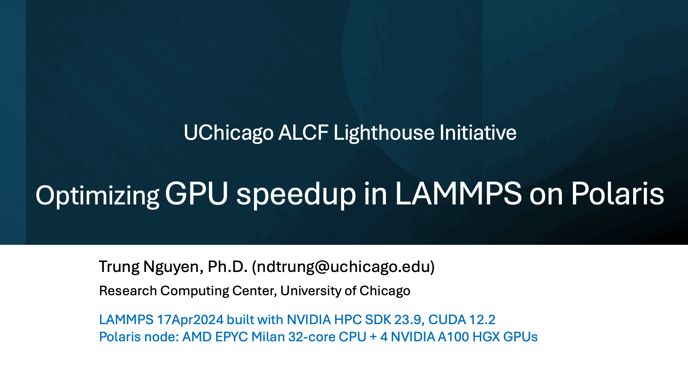

Hello! I am a computational scientist with expertise in molecular modeling, soft matter physics and high-performance computing.
In a nutshell, my studies are devoted to two complementary topics. First, I am interested in explaining intriguing phenomena at atomic, molecular and nanometer scales in the area of soft materials design. Second, I develop tools and methods to improve molecular simulation both in calculation speed and statistical quality.
My research ideas are inspired by the beauty of Nature, the symmetry of its structures and the irreversible, away-from-equilibrium nature of its dynamics. I found that many fascinating behaviors occurring at nano scales, if better understood, can be leveraged for engineering novel materials and devices.
You can reach me at ndactrung at gmail dot com, or LinkedIn, for consulting with molecular modeling, scientific computing, GPU programming, or for potential collaboration opportunities.
You can also find my published research on Google Scholar. My public projects are available on GitHub.
Highlights -- News
- 1/2025: GPU acceleration can make LAMMPS run 4X-40X faster than CPU-only on the OLCF Frontier supercomputer with AMD GPUs. The more computationally intensive the molecular models, the more speedup the GPUs can offer: Systems of dipolar particles benefit the most from GPU acceleration.
- 11/2024: I concluded my contribution to the UChicago Lighthouse project by optimizing LAMMPS GPU acceleration on the ALCF Polaris cluster. The simulation performance with NVIDIA A100 GPUs is 3X-16X faster than the CPU-only runs on the full node with 32 cores depending on the nature of molecular systems, that is, how much computation is offloaded to the GPUs.

- 7/2024: The PME Pathways in Molecular Engineering program concluded successfully. My computational module helped students explore the fascinating field of computational chemistry, molecular engineering and scientific computing!
- 4/2024: I taught GPU programming at the ICTP School on Parallel Programming and Parallel Architecture for High Performance Computing in Kathmandu, Nepal.
- 2/2024: GPU support for Smoothed Particle Hydrodynamics (SPH) and energy-conserving Dissipative Particle Dynamics (DPD) are now available in the GPU package in LAMMPS.
- 9/2023: I gave an invited talk, titled "LAMMPS: A flexible tool for particle-based modeling at multiple length scales", at the CECAM workshop for soft matter simulations, showing outstanding LAMMPS features that benefit soft matter simulation studies.